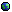

Here are various links to other websites I like and use. I've finally sorted them into various categories, and I've been expanding the site descriptions. If there's a broken link, then file an issue.
XMPlay -- media player that mainly focuses on module music formats like XM, MOD, S3M, and IT. Very good playback, supports plugins, and supports skins.
sdvx.in -- big list of Sound Voltex charts in image format, along with a few other games like Chunithm and Project Sekai (accessible via the icons at the very top). Very useful for looking up how a tricky section goes. The layout is fairly terse and unexplained, but the opening page sorts songs by name (in Japanese) and by difficulty (1-20). From there, clicking on the difficulty number will bring up the chart image if available, and there are often YouTube video links for the hardest two difficulties.
VOLTEXES -- site with guides on playing Sound Voltex. Hasn't been updated in a few months, but it's still quite useful.
wiby -- search engine for old-school webpages that work in older browsers. The "surprise me" button is excellent for finding interesting websites, sending you to a random page in its index.
Archen's Anime Page -- very long-running site with a lot of stylish anime fan-pages and anime reviews, and it's all by one person too. I'm tempted to outright bias you (yes, you reading this) against the review conclusions on the site, but they're not my opinions. Regardless of that, the site is very cool overall, just full of excellent web design and passion for anime. It's also one of the few sites I've seen left on the internet with a working guestbook (and it's self-hosted too).
Yukinu's Website -- a personal website that has quite a few interesting blog entries and links. Lots of good technical content in the blog, lots of assorted pages and site feature. Nice site design, too.
Battle of the Bits -- music and art competition site; contains a lot of the music I've ever made, spanning over a decade. Recently lost the domain name, went from .org to .com as a result. I haven't done much on the site in a while, but there was once a time when I'd compete here daily.
The Mod Archive -- more of the music I've made. A lot of the older songs are bad, but are still quite a few good ones. Many of the songs won't sound great in the online player due to being made without sample interpolation enabled, so they're much muddier than intended. Use XMPlay or MilkyTracker to play them, and disable interpolation in the settings.
TIC-80 -- some games I've made for the TIC-80 fantasy computer. Most notable of them is eyesoul, a floaty, bouncy shoot-em-up game I wrote for a game jam over at Battle of the Bits.
"Twitter" -- mostly retweets, but a few old projects are shown here and occasionally I'll post something; a lot of my posts involve fighting games. The site, as of this writing, is in the middle of the dumbest bit of auto-sabotage I've seen.
Soundcloud -- more music I've made, most of it like ten years old as of this writing. The songs here are pretty decent. I semi-recently uploaded a Vocaloid song I wrote in Toki Pona, made using Renoise and Hatsune Miku V4X.
Sketchfab -- a handful of extremely basic 3D models that I've made with Wings3D.
YouTube -- more music and some footage of a few old projects. I really wish I knew where I had put the code for some of these, I kind of want to work on type.prime again. Sadly, someone namejacked me way back in 2006 (or so), which means I'm null1023 there.
Software I like:
Renoise -- a tracker style DAW, probably the best money I've ever spent regarding software. Has a free, mostly un-crippled demo, with only audio export/rendering being disabled... but the audio rendering features are an extremely useful part of the workflow. Easily worth the price.
MilkyTracker -- a music editor styled after the classic Fast Tracker II. I love this program, and it's what got me into really making music on the computer. It's not terribly intuitive, since Fast Tracker II is from the time before standardized keybinds in software, but it's also not that hard to use. At the absolute least, I picked it up quickly enough back in 2007/8. :P
BambooTracker -- a tracker for making PC-98 music. The interface is modeled after jsr's FamiTracker, a similar tracker for the NES/Famicom (which is now dead and gone, but a modern fork known as Dn-FamiTracker exists).
Wings3D -- a very easy to use 3D modeling program that I like. I have a bad habit of editing models in Wings before moving back into Blender, but it's just so easy.
Rhythm Controller Wiki -- a wiki all about building or fixing custom controllers for rhythm games.
iidx.org -- a guide for getting started with Beatmania IIDX. I'm trying to get better at IIDX, but I'm still bad.
RemyWiki -- a wiki absolutely full of information on BEMANI's games.
Toki Pona links:
lipu tenpo -- a webzine written entirely in Toki Pona. If you're looking for a good collection of writings in Toki Pona, this is probably the best resource. An annoying amount of Toki Pona text on the web is ungrammatical (and thus very hard to understand and not that useful for practice), but lipu tenpo is quite high quality and rarely has me wondering if the phrasing makes sense.
musi lili -- a site by jan Same featuring a lot of resources on Toki Pona. In particular, this site has a rather nice font known as linja pona that represents the sitelen pona script for Toki Pona.
12 days of sona pi toki pona -- a video course by jan Misali for learning Toki Pona. Probably the video course on learning Toki Pona. It's being redone, but the updated version is taking quite a while to come out.
lipu sona -- a website for learning Toki Pona. Pretty good resource.
Other links:
SUDDEN DESU -- a rather cool digital archaeology blog featuring deep technical analysis of hidden things in various games, all gleaned through disassembly. Contains loads of info I've never heard of anywhere else even in passing, let alone in detail like seen here.
rnd's website -- personal website of the person who worked on the lipu sona Toki Pona course; contains some technical content with some other writings.
seximal -- a website by jan Misali that promotes the seximal (base 6) numbering system. I'm not actually a fan and I genuinely do like base 10 a lot, but I can at least understand the basis for it. There are parts where I'm unconvinced that this isn't a joke, although it could still be a serious proposal with humorous parts.
Toastytech -- Nathan's Toasty Technology page, probably most famous for its Graphical User Interface Gallery. Can be a bit strongly opinionated about things, but like, that's alright. Also has a links page.
Solipsys Limited -- a neat site with writings on math and juggling among other things; the site is also an old-school, non-Wikipedia style wiki. I'm probably not doing the content justice with this writeup, so check it out.
Darths and Droids -- a photo-webcomic that re-imagines the plot of the Star Wars movies as a tabletop RPG, starting from Episode 1, and expected to go through to Episode 9.
shmups.system11.org -- forum dedicated to talking about scrolling shoot-em-up games. One of the last phpBB-style forums that I still visit and post on (if not by choice, most of the others just died out).
HPC:Factor -- a site and forum dedicated to Windows CE-based handhelds and software for them. Probably the last site with any of this stuff. Not the most active forum, but not dead either.
The Corporate B.S. Generator -- generates extremely realistic corpo-speak nonsense text. I found this on the Toastytech links page (see above in the list), but it's too good for me to not link to it myself. Now it's your turn to energistically transition orthogonal mindshare, whatever the absolute hell that means.
Page updated on .
This site can be viewed in any browser, although it will look slightly better in a more recent one.